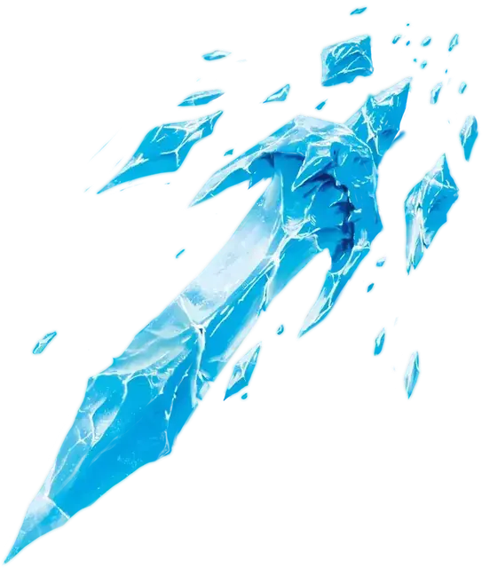

Ледяной кинжал
Ice Knife
1 уровень, Призыв

Время сотворения Действие
Дистанция 60 футов
Компоненты С, М (капля воды или кусочек льда)
Длительность Мгновенная
Классы Волшебник, Друид, Чародей
Подклассы Зимний ходок (Следопыт)
Вы создаёте осколок льда и метаете его в существо, находящееся в пределах дистанции. Совершите дальнобойную атаку заклинанием по цели. При попадании цель получает 1к10 Колющего урона. Вне зависимости от попадания осколок взрывается: цель и каждое существо в пределах 5 футов от неё должны совершить спасбросок Ловкости, при провале получая 2к6 урона Холодом.
Используя ячейку заклинания большего уровня. Урон Холодом увеличивается на 1к6 за каждый уровень ячейки выше 1-го.